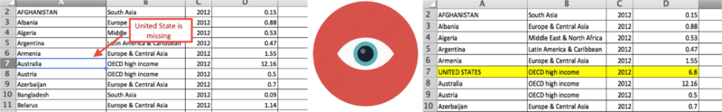
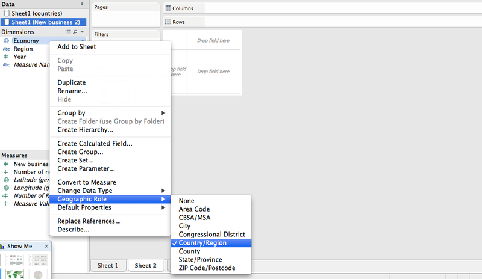
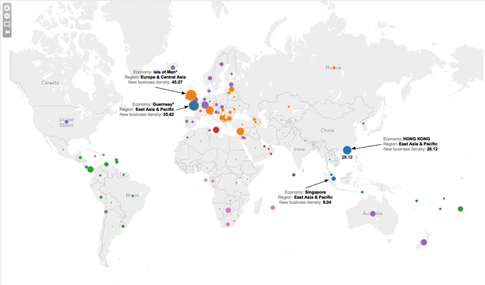
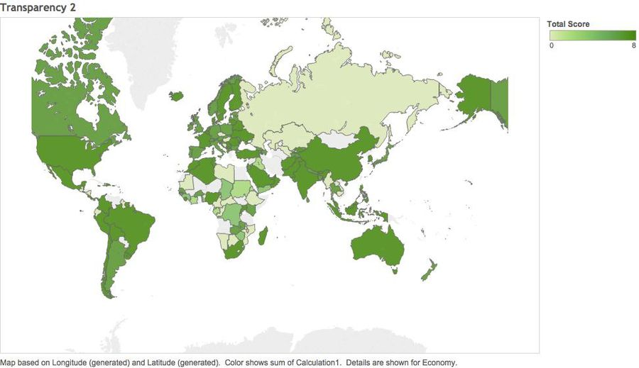

Where's the best city to start your own business ?
December 17, 2014 Tableau
TableauBackground: In this digital economy age, massive and complex data have been captured and stored in organization databases and/or data warehouses. By and large, these data contain a large amount of variables of a particular product or activity. Due to limitations in perceptual and screen space, data visualization techniques available in traditional business intelligence systems tend to confine to univariate and bivariate data such as bar chart, pie, chart, histogram, and scatter plot. As a result, many important relationships that live in these data remain undiscovered. In this assignment, you are required to design a data visualization application for analyzing and visualizing high-dimensional attributes from a dataset of your choice. The goal of this assignment is not to develop a new visualization tool, but to apply the interactive visualization techniques you have learned by using commercial-of-the-shelf software. It also aims to allow you to gain hands-on experiences on using the visualization tool and at the same time, to evaluate the pros and cons of the tool in real world applications.
Step 1: Identify a theme of interest & questions for investigation
Jacob was 48 years old when the bad news hit: his department is going to move to India because the labor cost is lower. Since the day Jacob joined this company, he had been working really hard for 9 years to get what he has now, a middle-level manager. However, now he's kicked out of the company.
Having spent his entire life in corporate positions, he has gained a rich experience on managing the employees and leading projects. It is not that difficult for him to find a new job. However, Jacob gets sick of the game of corporate roulette (downsizing, restructuring etc). It was the time for him to start his own business.
Now he's facing two problems:
1. Which country should I choose to start my business?
2. How long will it take to start my own business, how about the procure, is it long?
With those questions in mind, Jacob starts his research.
Step 2: Find appropriate data attributes
Jacob's best friend Mr Kam introduced him a very interesting website, the World Bank, that has a comprehensive set of data related to Entrepreneurship, maybe Jacob can find his answer from there.
Luckily, after three hours research, Jacob finally collected the dataset he needed to make the right decision. Jacob is very generous so he shared those datasets with his friends, Scott and Tom, who also have the ambitious to run their own business:
The World Bank - http://www.worldbank.org
How many new companies are created in each country ? - http://www.doingbusiness.org/data/exploretopics/entrepreneurship
Jacob noted that the data found from the World Bank is defined as the number of newly registered corporations per 1,000 working-age people (those ages 15-64).
What are the cost to start a new company ? - http://www.doingbusiness.org/data/exploretopics/starting-a-business
The new registered company data are collected from companies that is 100% domestically owned, have start up capital equivalent to 10 times income per capita. engaged in general industrial or commercial activities and employees between 10 to 50 people within the first month of operations.
Observation 1: How many new companies are created every day ?
Jacob believes that the simplest way to access how easy it is to open a new business is to look at how many new companies are created every day around the world. The more new opened company, the easier it is to register a new business at that region.
Using the data downloaded from the World Bank website, Jacob is going to make some modification to visualize the data in a more straightforward way. He's very happy to share the process about how he did it with Scott and Tom.
The dataset downloaded from the World Bank in in ".xls" format, which is unreadable for Tableau. So the first thing Jacob did is to save the dataset to a ".xlsx" format.
Jacob imported the data to the Tableau, he notices that there are some countries have no data at all, like United States. He feels so uncomfortable with this so he searched online and fill in what is missing in this dataset.
The new business density of United States is abstract from this following website: http://www.citylab.com/work/2012/09/geography-business-density/2807/

Refresh the dataset in Tableau to make sure the new data is counted. In order to show the data in a map, Jacob needs to assign the column "economics" a geography role - "Country/Region"

Result:

From the visualization, Jacob is quite surprised that the Europe region countries are very active in new business. The most active country is the British Virgin Island, which is excluded from this graph, followed by those Europe countries like Isle of Man, Guemsey. In the Asia Region, Hong Kong seems a good place to start his new business. "Hmmm, maybe I should go to the Europe to start my business" Jacob thought.
Observation 2: Information & Regulation Transparency

The whole Europe and the OECD high-income countries are quite transparent, including London, Belarus, Australia, Finland, Sweden and United States.